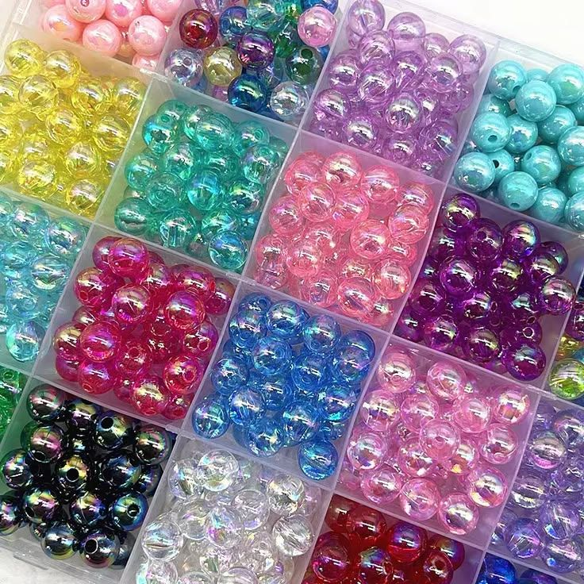
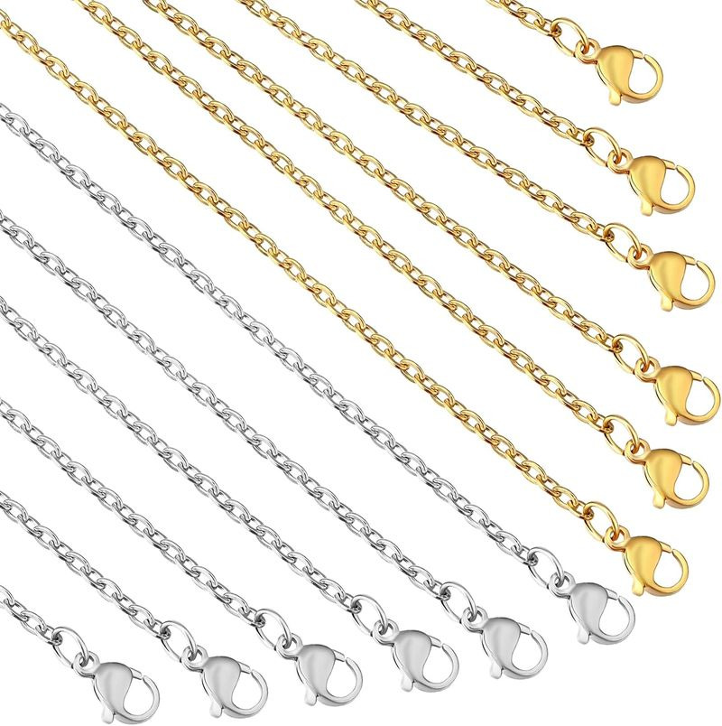
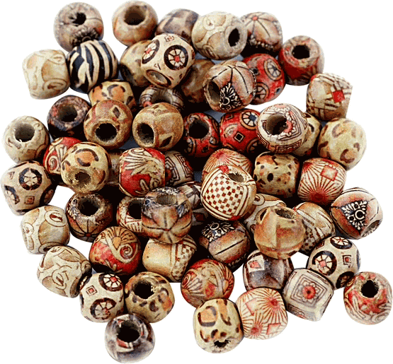
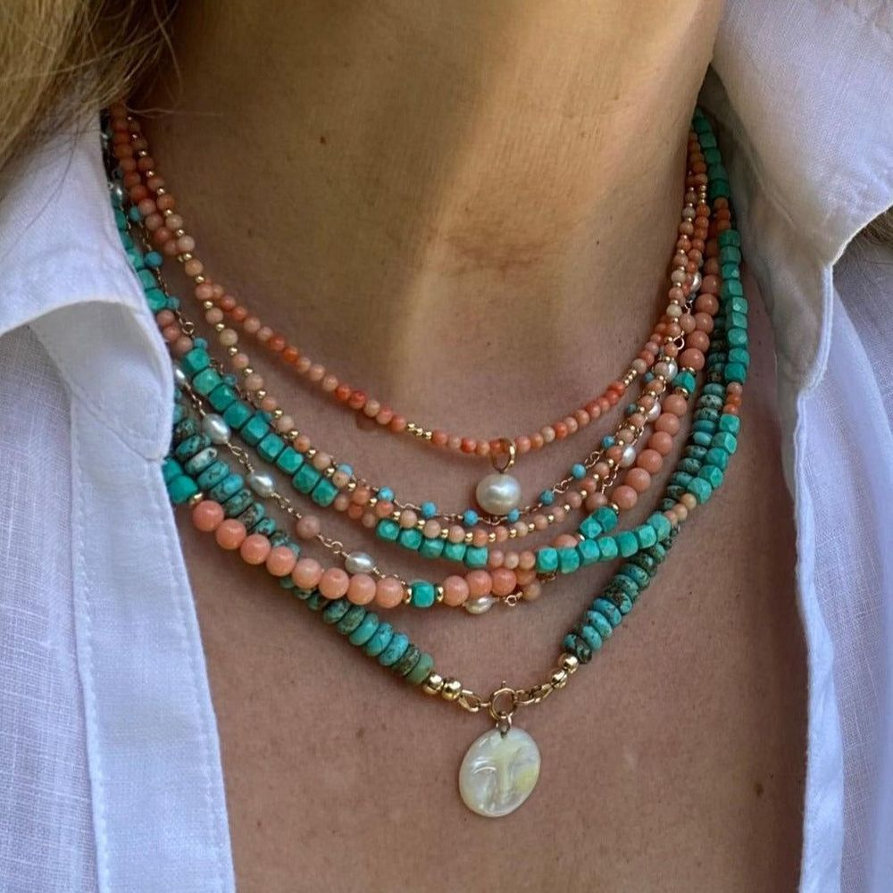

Over deze Workshop
Materialen en technieken
Tijdens deze workshop werkt u met verschillende materialen, zodat u zelf kunt kiezen welke stijl bij u past. U rijgt kralen aan bandjes, combineert kralen met metalen hangers en schakels, en maakt armbanden en kettingen in verschillende stijlen: van kleurrijk en speels tot sober en verfijnd.
Onze ervaren makers laten u stap voor stap zien hoe het werkt: hoe u kralen rijgt en afwerkt, hoe u metalen onderdelen aan elkaar maakt en hoe u een sluiting bevestigt. Zo ontdekt u alle kneepjes van het vak, terwijl u in een gezellige sfeer aan uw eigen ontwerp werkt.
 Bandjes met kralen
Bandjes met kralen- Metalen sieraden met kralen
 Armbanden in verschillende stijlen
Armbanden in verschillende stijlen Kettingen in verschillende stijlen
Kettingen in verschillende stijlen



De workshop
Iedere deelnemer maakt tijdens de workshop één of meerdere sieraden. U kiest zelf uw kralen, kleuren en stijl, en wij helpen u om uw idee om te zetten in een sieraad om trots op te zijn. Aan het einde van de workshop gaat iedereen naar huis met een eigen, unieke creatie: voor uzelf, of als handgemaakt cadeau voor iemand anders.
 Creatieve Vrijheid
Creatieve Vrijheid
Geen ervaring nodig. Onze workshops zijn ontworpen voor deelnemers van alle niveaus.
 Kies Uw Stijl
Kies Uw Stijl
Van een vrolijk kralenbandje tot een verfijnde ketting: u bepaalt zelf de kralen, kleuren en vorm.
Om Echt te Dragen
U gaat naar huis met een sieraad dat u nog lang kunt dragen, of met een uniek cadeau.
 Samen Creatief
Samen Creatief
Creëer in een ontspannen, gezellige sfeer, ideaal voor groepen en feestjes.
Een sieraad dat u echt draagt
Wat deze workshop extra leuk maakt: u maakt niet alleen iets moois, u maakt iets wat u echt kunt dragen. Veel deelnemers dragen hun zelfgemaakte sieraad nog maanden of zelfs jaren later. Zo wordt uw armband of ketting een dagelijkse herinnering aan een gezellige middag met vrienden, collega's of familie.

Perfect voor Groepen
Sieraden maken is een ideale groepsactiviteit, bijvoorbeeld voor een vrijgezellenfeest, teamuitje of verjaardag. Samen creatief bezig zijn zorgt voor verbinding, plezier en leuke gesprekken aan tafel. U zit niet alleen te knutselen: u maakt samen iets wat u nog lang bijblijft.
 Praktische Informatie
Praktische Informatie
De workshop Sieraden Maken in het kort:
- Duur: 2 uur
- Professionele begeleiding
- Inclusief materialen (voor ieder wat wils)
- Voor beginners en gevorderden
- De kunstenaar maakt sfeerfoto's en een groepsfoto na afloop
U hoeft alleen uw creativiteit mee te brengen! De workshop kan voor groepen worden georganiseerd en wij geven hem zowel op locatie als in ons eigen atelier in de Betuwe. Voor meer informatie over data, prijzen en het reserveren van uw plaats, neem contact met ons op. Wij beantwoorden graag al uw vragen!
Klaar om uw eigen sieraad te maken?
Reserveer nu uw plek en kom uw eigen armband of ketting maken. Wij helpen u graag met alle informatie over beschikbare data en prijzen.